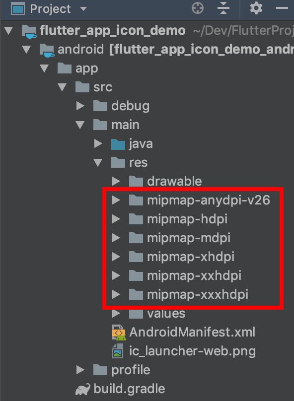
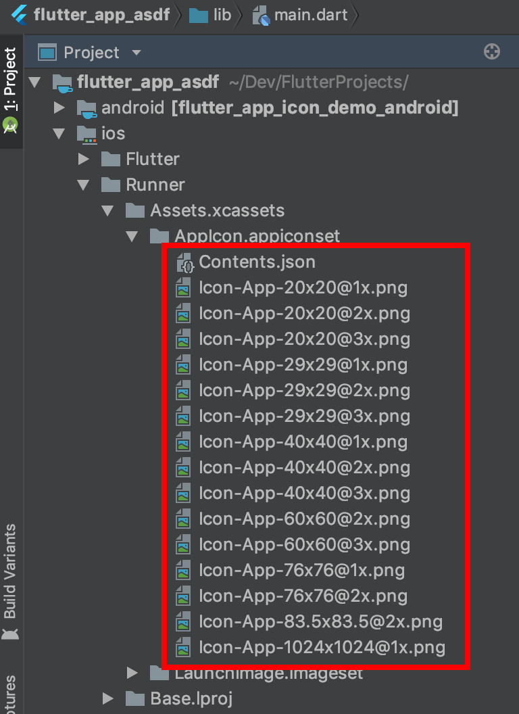

How to change the application launcher icon on Flutter?
When I create an app with a flutter create command, the flutter logo is used
as an application icon for both platforms.
If I want to change the app icon, shall I go to both platforms directories and
replace images there?, by platforms directories I mean
myapp/ios/Runner/Assets.xcassets/AppIcon.appiconset for iOS and
myapp/android/app/src/main/res for Android.
Or is it possible to define an image as a Flutter Asset and the icons are generated somehow?.
Answer
Flutter Launcher Icons has been designed to help quickly generate launcher icons for both Android and iOS: https://pub.dartlang.org/packages/flutter_launcher_icons
- Add the package to your pubspec.yaml file (within your Flutter project) to use it
- Within pubspec.yaml file specify the path of the icon you wish to use for the app and then choose whether you want to use the icon for the iOS app, Android app or both.
- Run the package
- Voila! The default launcher icons have now been replaced with your custom icon
I'm hoping to add a video to the GitHub README to demonstrate it
Video showing how to run the tool can be found here.
If anyone wants to suggest improvements / report bugs, please add it as an issue on the GitHub project.
Update: As of Wednesday 24th January 2018, you should be able to create new icons without overriding the old existing launcher icons in your Flutter project.
Update 2: As of v0.4.0 (8th June 2018) you can specify one image for your Android icon and a separate image for your iOS icon.
Update 3: As of v0.5.2 (20th June 2018) you can now add adaptive launcher icons for the Android app of your Flutter project
Suggest
Setting the launcher icons like a native developer
I was having some trouble using and understanding the flutter_launcher_icons package. This answer is how you would do it if you were creating an app for Android or iOS natively. It is pretty fast and easy once you have done it a few times.
Android
Android launcher icons have both a foreground and a background layer.

(image adapted from Android documentation)
The easiest way to create launcher icons for Android is to use the Asset Studio that is available right in Android Studio. You don't even have to leave your Flutter project. (VS Code users, you might consider using Android Studio just for this step. It's really very convenient and it doesn't hurt to be familiar with another IDE.)
Right click on the android folder in the project outline. Go to New >
Image Asset. (Try right clicking the android/app folder if you don't see
Image Asset as an option. Also see the comments below for more
suggestions.) Now you can select an image to create your launcher icon from.
Note: I usually use a
1024x1024pixel image but you should certainly use nothing smaller that512x512. If you are using Gimp or Inkscape, you should have two layers, one for the foreground and one for the background. The foreground image should have transparent areas for the background layer to show through.

(lion clipart from here)
This will replace the current launcher icons. You can find the generated icons
in the mipmap folders:

If you would prefer to create the launcher icons manually, see this answer for help.
Finally, make sure that the launcher icon name in the AndroidManifest is the
same as what you called it above (ic_launcher by default):
application android:icon="@mipmap/ic_launcher"
Run the app in the emulator to confirm that the launcher icon was created successfully.
iOS
I always used to individually resize my iOS icons by hand, but if you have a
Mac, there is a free app in the Mac App Store called Icon Set Creator. You
give it an image (of at least 1024x1024 pixels) and it will spit out all the
sizes that you need (plus the Contents.json file). Thanks to this answer for
the suggestion.
iOS icons should not have any transparency. See more guidelines here.
After you have created the icon set, start Xcode (assuming you have a Mac) and
use it to open the ios folder in your Flutter project. Then go to Runner >
Assets.xcassets and delete the AppIcon item.

After that right-click and choose Import.... Choose the icon set that you just created.
That's it. Confirm that the icon was created by running the app in the simulator.
If you don't have a Mac...
You can still create all of the images by hand. In your Flutter project go to
ios/Runner/Assets.xcassets/AppIcon.appiconset.

The image sizes that you need are the multiplied sizes in the filename. For
example, Icon-App-29x29@3x.png would be 29 times 3, that is, 87 pixels
square. You either need to keep the same icon names or edit the JSON file.